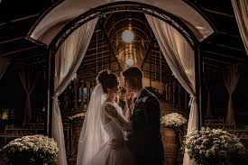
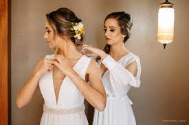

Casamentos Realizados



Criamos celebrações elegantes, delicadas e personalizadas. Cada detalhe é pensado para refletir a essência do casal com sofisticação e harmonia.
Conheça Nosso TrabalhoNo Atelier de Casamentos Boutique Antique, acreditamos que o amor merece ser celebrado com tempo, cuidado e sensibilidade.
Cada história que chega até nós é única, e é a partir dessa singularidade que construímos projetos personalizados, pensados para refletir a essência, os sonhos e a identidade de cada casal. Não seguimos fórmulas prontas — criamos experiências que nascem do sentimento e se transformam em cenários memoráveis.
Nossa estética é marcada pela suavidade. Tons claros, composições delicadas, texturas naturais e elementos cuidadosamente escolhidos fazem parte da nossa linguagem visual. Laços perolados, tecidos fluidos, flores em perfeita harmonia e ambientes acolhedores são pensados para transmitir leveza, elegância e emoção.
Acreditamos que o verdadeiro luxo está nos detalhes silenciosos: na escolha da paleta, no equilíbrio das formas, na forma como a luz toca cada espaço. Cada ambiente é desenhado para acolher, emocionar e criar uma atmosfera atemporal, onde tudo faz sentido e nada é excessivo.
Mais do que decorar ou planejar, nós contamos histórias. Cada projeto é desenvolvido com sensibilidade e atenção, respeitando o ritmo dos noivos e valorizando aquilo que torna a celebração única. Caminhamos lado a lado em cada etapa, oferecendo segurança, tranquilidade e um olhar atento a cada detalhe.
Somos especializados em casamentos ao ar livre, em praias, campos e espaços que dialogam com a natureza. Acreditamos na beleza do natural, na elegância do simples e na força dos ambientes que respiram liberdade, luz e autenticidade.
Nosso processo é conduzido com carinho e comprometimento. Desde o primeiro contato até o último instante da celebração, cuidamos de cada escolha para que o grande dia seja vivido com leveza, emoção e presença, permitindo que os noivos se concentrem apenas no que realmente importa: viver o amor.
No Atelier de Casamentos Boutique Antique, transformamos sonhos em experiências reais, criando celebrações que permanecem na memória, no coração e na história de todos que as vivenciam. Cada detalhe é pensado para eternizar momentos e traduzir sentimentos que merecem durar para sempre.